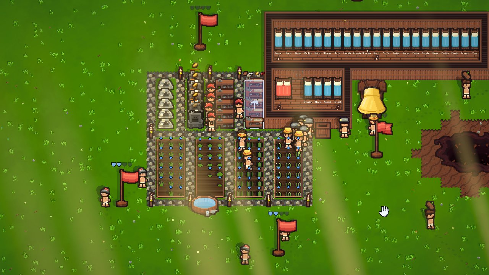
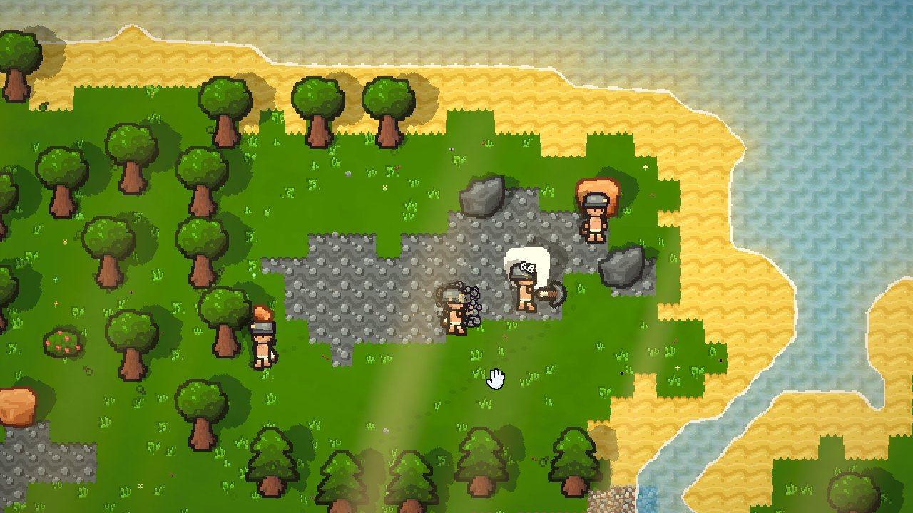
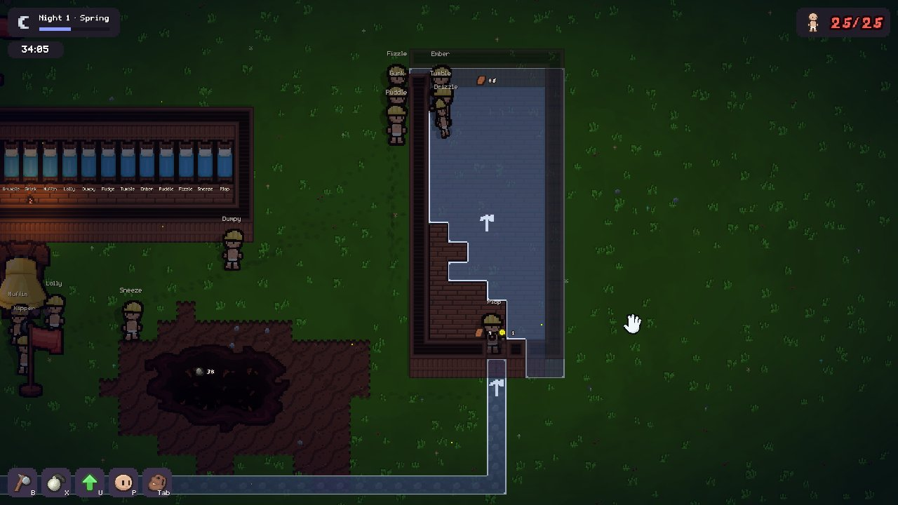

GOOB
Tools: Unity, C#
Build a colony
GOOB is a 2D colony survival simulation I’m building in Unity with friends. Players guide a colony of named villagers, called Goobs.

Gather and mine
The Goobs farm, mine, and gather resources, then construct new buildings as the day/night cycle and seasons change.

Survive the night
I’m combining hand-written code with AI-assisted development to produce a clean, polished final game.
